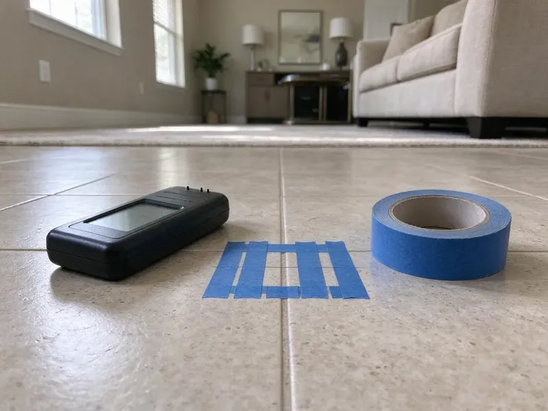

Commercial Plumbing in Portland, OR
JFL Plumbing delivers dependable commercial plumbing solutions for businesses across Portland, OR.
- Fast Commercial Service
- Licensed & Insured
- Certified Backflow Testers
- Licensed & Insured

Get a Commercial Plumber You Can Count On in Portland, OR.
Don't let plumbing problems disrupt your operations. Get in touch with us for a swift resolution.
Fast Commercial Plumbing That Limits Downtime in Portland, OR
JFL Plumbing specializes in comprehensive commercial plumbing services built for businesses across Portland, OR. We understand that commercial plumbing systems are complex and critical to your daily operations, requiring specialized tools and expertise beyond residential work.
Our expertise includes:
- Large-scale water heater repair and installation
- Flushometer, urinal, commercial water heater and booster pump repair
- Backflow prevention device testing and repair

Additional Plumbing Maintenance Services in Portland, OR
Our maintenance and specialty plumbing services in Portland, OR protect your home year-round and extend the life of every system.


Customers
Why Choose JFL Plumbing for Commercial Plumbing in Portland, OR?
Choosing the right commercial plumber means selecting a partner who understands the unique challenges of business plumbing systems. Our team is equipped with modern diagnostic tools and proven techniques to resolve even the most complex problems efficiently.
- Business Continuity, We ensure minimal disruption to your commercial operations with efficient service and lasting repairs.
- Detailed Records, You get invoices, photos and test reports for each service visit.
- Code Compliance, All our commercial plumbing work closely follows local Portland codes and Oregon regulations, protecting safety and legality for your business.
Citywide Coverage
No matter where your commercial property is located within Portland, our skilled plumbers are just a call away. We provide complete commercial plumbing coverage, keeping quick response times for businesses across the entire Portland area.
Experienced Team
Each technician has worked in restaurants, medical facilities and multi-family buildings. They understand health codes, tenant concerns and the pressure of keeping a business open.
Safety-First Approach
JFL Plumbing places a high emphasis on code compliance for all commercial plumbing work in Portland, OR. We ensure that every repair, installation, or maintenance service meets or exceeds current building and health codes to protect your business and its occupants.
Trusted Certified Portland Plumbing Services Professionals
At JFL Plumbing, we take pride in providing licensed, certified plumbing services throughout Portland, OR. Backed by leading industry credentials, our experienced plumbers combine technical skill with genuine customer care. Whether it is repair, installation, or maintenance, we follow strict safety and quality standards to deliver long-lasting results you can trust.
Call Us Now PHCC Plumbing Contractor Recognition
PHCC Plumbing Contractor Recognition Better Business Bureau (BBB) Accreditation
Better Business Bureau (BBB) Accreditation Angi Certified Pro
Angi Certified Pro ISO 9001 Quality Management Certification
ISO 9001 Quality Management CertificationTrusted Commercial Plumbing Services in Portland, OR
Commercial Water Heaters and Boilers in Portland, OR
Commercial kitchens, gyms and multi-family buildings need large amounts of hot water. We service and install high-input tank water heaters, tankless racks and boiler-fed systems with storage tanks. Many rural homes rely on private wells, and owners around Portland benefit from testing for iron, hardness and other typical concerns. Mineral scale can build up in these systems fast, so we offer descaling and flushing on a schedule. We also install mixing valves to deliver safe temperatures at hand-washing sinks.

Commercial Plumbing Costs and Maintenance Plans in Portland, OR
Backflow tests typically cost $75 to $175 per assembly, while grease line jetting often runs $350 to $900 depending on length and buildup. Emergency after-hours service carries a higher rate. Preventive maintenance plans spread costs evenly and cut down on surprise repairs. We give you written proposals so you can budget with certainty.
Sewer Line Repair & Replacement for Businesses in Portland, OR
The main sewer line is crucial for waste disposal at any commercial property in Portland, OR. JFL Plumbing provides complete sewer line services, including trenchless repair options like pipe lining and bursting, which minimize excavation and disruption to your business's property. We address problems like root intrusion, collapsed pipes, and severe blockages, ensuring your commercial sewer system functions efficiently and reliably.
Drain Jetting and Sewer Camera Work in Portland
Commercial drains carry grease, paper and debris that build up faster than in homes. We use high-pressure jetters to scour main lines and camera equipment to locate breaks, roots and bellies. Video records help you plan repairs and budget for capital work. Preventive jetting cuts down on emergency backups.
Multi-Family and Property Management Plumbing in Portland
Apartment complexes and HOAs need a plumber who can handle many units and quick turns. We repair leaks, replace water heaters, clear stacks and repipe buildings while keeping residents informed. Property managers get consistent pricing and detailed invoices for each unit. We also help plan capital projects like building-wide repipes.
Commercial Pipe Repair & Repiping in Portland, OR
Commercial properties in Portland, especially older buildings, often face issues with aging plumbing infrastructure, including leaks, corrosion, and burst pipes. We provide expert pipe repair, using durable materials like copper, PEX, and various grades of PVC, suitable for commercial demands. For extensive damage or frequent problems, repiping may be necessary to upgrade your system and prevent future disruptions. Our team can assess your current piping, identify weak points, and recommend the most cost-effective and durable solutions for your business.
Commercial Drain Cleaning & Hydro-Jetting in Portland
Commercial drains handle far higher volumes and different types of waste than residential ones, leading to more frequent and stubborn clogs. Our services include powerful hydro-jetting, which uses high-pressure water streams to scour pipe interiors, removing grease, sludge, and debris that accumulate in commercial kitchens and restrooms. This method is highly effective for maintaining the large diameter pipes typical in commercial settings and preventing costly backups in Portland, OR. We service all types of commercial properties, from restaurants to retail spaces.

Commercial Grease Trap Services in Portland, OR
Restaurants and food service establishments in Portland are legally required to maintain functional grease traps to prevent fats, oils, and greases (FOG) from entering the sewer system. JFL Plumbing offers comprehensive grease trap cleaning, repair, and installation services. Regular cleaning is essential to prevent blockages and maintain compliance with local health codes. We also diagnose problems like foul odors, slow drainage, or trap overflow, making sure your kitchen operations run smoothly and avoid costly fines and environmental hazards.
Commercial Plumbing Near Me in Portland, OR
When you search for 'commercial plumbing near me' in Portland, OR, JFL Plumbing is the dependable local expert ready to serve your business. Our proximity and understanding of local commercial properties mean faster response times and plumbing solutions tailored to the specific challenges faced by businesses in our area. We are committed to being your dependable, nearby commercial plumbing partner.
Business owners searching for commercial plumbing near me can count on JFL Plumbing for fast response in Portland. Our trucks carry commercial parts and backflow test kits. Most service calls are handled in a single visit.
JFL Plumbing at a Glance
- Licensed and insured plumbers serving Portland, OR
- Same-day appointments and 24/7 emergency response
- Upfront, flat-rate pricing before work begins
- 4.8-star rated by 657+ Oregon customers
Portland Map
Portland Information
- Population
- 630,498
- Area codes
- 503/971/360
- Service area
- Portland and communities within 40 miles
- Nearby
- Lake Oswego, Beaverton, Bethany, Tigard
For businesses in Portland, OR, durable commercial plumbing is essential to withstand heavy usage, and our services are built to address local water conditions and the daily demands of your business.
Expert Services
Trust our professionals for reliable JFL Plumbing solutions in Portland, OR.
Our Specialized Plumbing Services in Portland, OR
At JFL Plumbing, we provide a complete range of plumbing services across Portland, OR. From leak detection to full system installations, our team ensures fast, precise, and affordable service for both residential and commercial properties. Explore our core services below:


Here Is How Our Commercial Plumbing Process Works in Portland, OR
We keep commercial service simple, documented and scheduled around your business.
Request a Quote
Contact JFL Plumbing at (971) 333-7694 to schedule a commercial plumbing service or request an emergency response. We'll gather details about your problem and dispatch a qualified technician to your Portland business.
On-Site Assessment
Our commercial plumber arrives promptly to your business in Portland, conducting a thorough diagnosis of the plumbing problem using specialized tools. We will clearly explain the issue and propose the most effective solution.
Expert Service
With your approval, our technician will perform the necessary commercial plumbing repairs, installations, or maintenance. We use quality parts and follow industry best practices, ensuring lasting results for your Portland business.
Frequently Asked Questions About Commercial Plumbing in Portland
The cost of commercial plumbing services in Portland, OR varies widely depending on the complexity of the job. Minor repairs like a clogged drain might range from $150 to $400, while a commercial water heater replacement could be $2,000 to $8,000 or more. We provide honest, upfront pricing after a thorough on-site assessment.
Yes, we install plumbing from plans, pull permits and coordinate with your general contractor. We schedule inspections to keep your opening date on track.
JFL Plumbing services and installs all major brands of commercial water heaters, including A.O. Smith, Rheem, Bradford White, Ruud, and State. Our technicians are trained to work on various types, such as gas, electric, and tankless commercial units, ensuring your business has reliable hot water.
Yes, JFL Plumbing understands that plumbing emergencies can happen anytime and seriously impact your business operations. We offer 24/7 emergency commercial plumbing services throughout Portland, OR. You can call us anytime, day or night, and we will dispatch a technician to address your urgent plumbing issue promptly.
Key signs include unexplained increases in water bills, persistent slow drains or frequent clogs, foul odors coming from drains, reduced water pressure, discolored water, or visible leaks around fixtures or pipes. Addressing these quickly can prevent more costly damage to your Portland business.
Hydro-jetting is a powerful drain cleaning method that uses high-pressure water streams to completely clear commercial pipes of blockages, grease buildup, and debris. It's highly effective for commercial kitchens and other businesses in Portland that accumulate significant FOG (fats, oils, and grease), providing a much more complete clean than traditional snaking.
JFL Plumbing services and installs all major brands of commercial water heaters common in Oregon, including AO Smith, Rheem, Bradford White, and State Water Heaters. Our technicians are trained on the latest models and technologies to provide efficient and reliable hot water for your business.
Yes, JFL Plumbing has specialized expertise in a wide range of commercial plumbing equipment. We routinely service, repair, and install grease traps, industrial pumps, backflow prevention devices, and commercial water filtration systems for businesses across Portland.
What People Are Saying About Our Plumbing Experts?

Emily R.
I called JFL Plumbing for plumbing repair, and the technician was fast, polite, and thorough. They explained the problem clearly and fixed it the same day. I will definitely hire them again. Highly recommended!
Plumbing Repair · Tigard, OR
James P.
Our commercial plumbing system had a leak under the sink, and JFL Plumbing handled it professionally. The plumbers arrived quickly and restored everything without disruption to our customers.
Commercial Plumbing · Gresham, OR
Mark T.
When our office needed drain cleaning, JFL Plumbing provided quick, reliable service. The plumber arrived on time and made sure every drain flowed perfectly before leaving. Very satisfied.
Drain Cleaning · Aloha, OR
Laura S.
I scheduled a water heater replacement, and the team made the process smooth and affordable. The new unit works perfectly, and they cleaned up after completing the job.
Water Heater Replacement · Gresham, ORRobert G.
The trenchless sewer replacement saved our front yard. They walked us through the camera inspection footage first so we knew exactly what we were paying for.
Sewer Line Replacement · Lake Oswego, ORSofia M.
Two new toilets installed in one visit, no mess left behind, and the tech even adjusted a faucet he noticed was dripping. Fair pricing and really friendly.
Toilet Installation · Tigard, OR